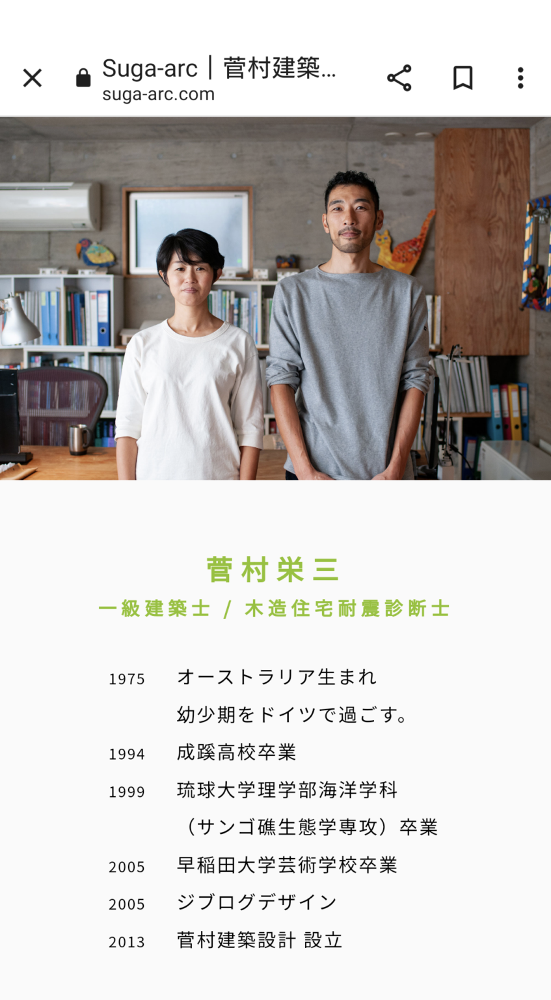
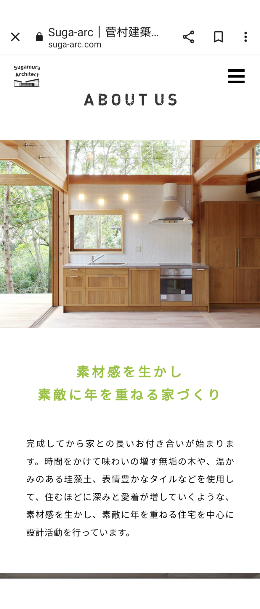
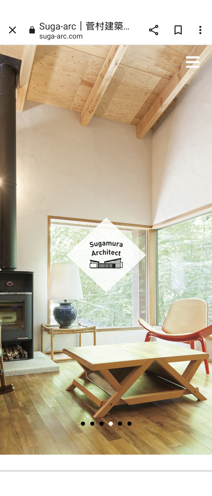
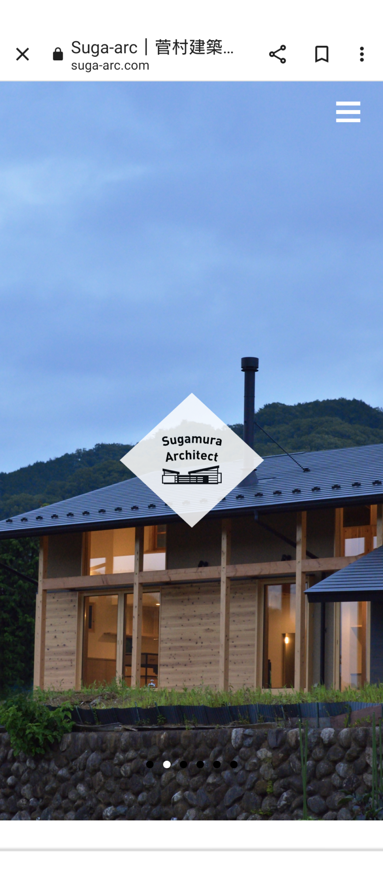
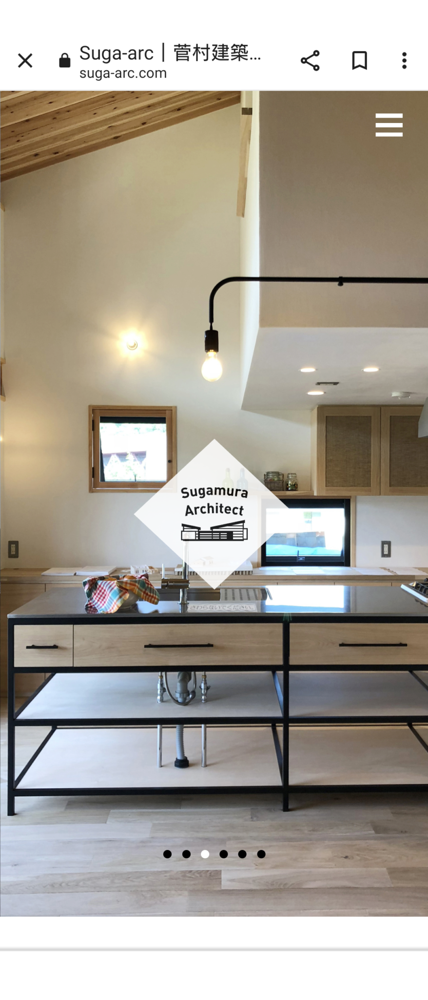
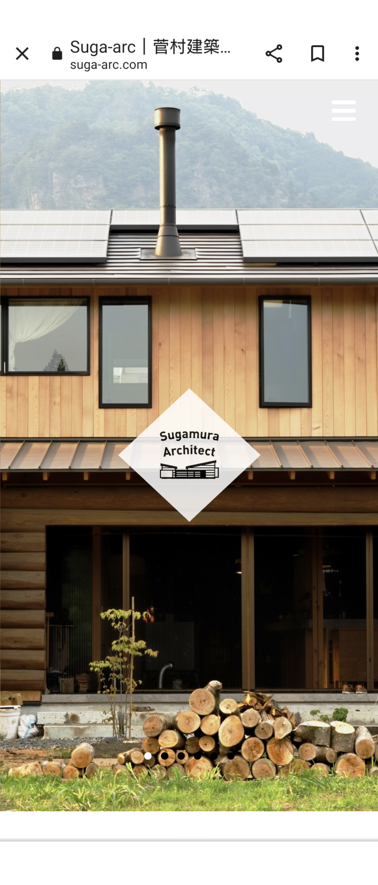
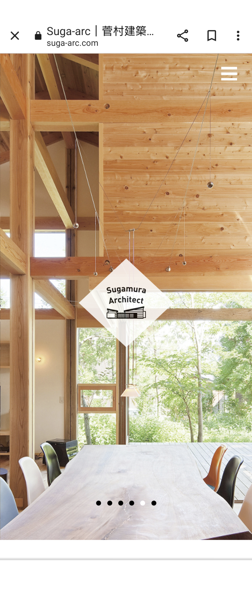

リフォームサービスのご提案を始めました!「美しいデザイン」「素晴らしい素材」「木の家づくり」で著名な菅村建築設計事務所さんのリフォームサービスをお届け出来ます!
DAIZENの白羽です!素晴らしい「木の家づくり」で大変好評の菅村建築設計事務所さんのリフォームサービスをDAIZENのお客様にご提案出来る事になりました!転居前ハウスクリーニング、新居のご入居前ハウスクリーニングで、リフォームサービスをご検討なされるお客様がとても多く、ぜひよい機会なので菅村建築設計事務所の素晴らしい「美しい家づくりのデザイン」をご検討ください!菅村建築設計事務所のスガムラ代表は、一級建築士でなおかつツールドおきなわを完走するスーパーアスリートでいて、なおかつ沖縄の素晴らしいリーフブレイク波で活躍したサーファーでもあります！「菅村建築設計事務所さんの美しいデザイン力と卓越したアーキテクト力」は、それら菅村代表の逞しいアスリートパワーに支えられた力強さと、自然のエネルギー（素材の美しさ）が調和した類稀なる素晴らしい作品を多く輩出しております。リフォームするターゲットの大小問わずDAIZEN白羽にお声掛けください。宜しくお願いいたします! 作品などホームページご覧下さい！https://suga-arc.com/aboutus/







